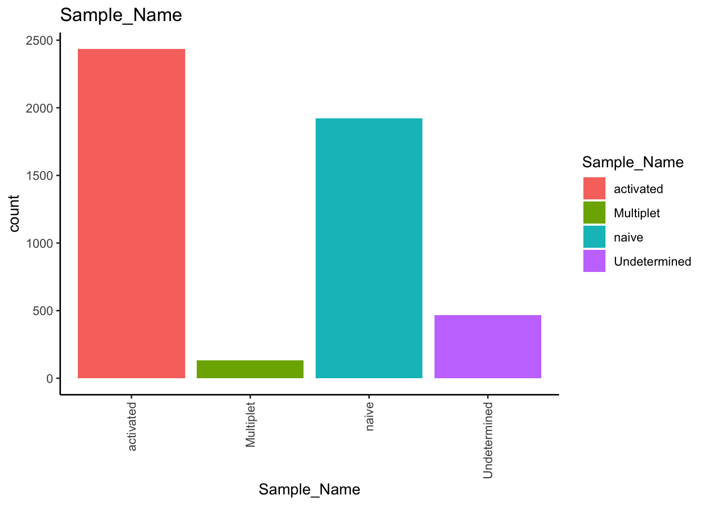

expMat <- fread(file = "data/raw_data/Demo-WTA-AbSeq.csv", sep = ",", header=TRUE) %>%
data.frame(row.names = 1)01 Data Import
Import the expression matrix
The expression matrix is a table storing the expression value of bioproducts (gene or protein). Depending on the experimental setup, you will find gene expression and / or protein expression values in the expression matrix.
Expression matrix is stored in CSV.
Note
CSV is the output of V1 pipeline. If you run the V2 pipeline, the expression matrix is pre-imported in Seurat object.
By default, the expression matrix is organized: rows as cell indexes, and columns as bioproducts.
A1BG A1BG.AS1 A1CF A2M A2M.AS1
3261781 0 0 0 0 0
9155806 0 0 0 0 0
4304661 0 0 0 0 0
2216902 0 0 0 0 0
13160139 0 0 0 0 0
Question
Why are many zeros “0” in the expression matrix?
Answer
scRNA-seq usually contains many zeros. The reasons are:
Stochastic gene expression
Limitation of single cell technology: On average, 5-8% of mRNA transcripts can be captured
The expression matrix has two groups of bioproducts: gene expression and protein expression (AbSeq).
Gene and AbSeq are analyzed separately. We separate gene UMIs and AbSeq UMIs, and store them in separate data frames.
Note
AbSeq has pAbO in the name. We can use pAbO as the key word to select AbSeq.
rna <- dplyr::select(expMat, !grep("pAbO", colnames(expMat), value = T))
ab <- dplyr::select(expMat, grep("pAbO", colnames(expMat), value = T))Create Seurat object
Seurat requires the expression matrix to have a specific format: - Each row as a bioproduct - Each column as a cell - Bioproduct name as row name
The arrangement of rows and columns of Seurat object is different from the expression matrix. We need to transpose the expression matrix.
# transpose data
rna <- data.frame(t(rna), check.names = FALSE)
ab <- data.frame(t(ab), check.names = FALSE)After transposing, the expression matrix has each row as a bioproduct and each column as a cell.
3261781 9155806 4304661 2216902 13160139
A1BG 0 0 0 0 0
A1BG.AS1 0 0 0 0 0
A1CF 0 0 0 0 0
A2M 0 0 0 0 0
A2M.AS1 0 0 0 0 0
Question
Compare `expMat` before and after transposition. Do you notice the difference?
The gene expression now is stored in rna. It is ready to create a Seurat object to store gene expression.
We will first focus on gene expression. AbSeq will be covered in the chapter of “Combining scRNA-seq and AbSeq”.
seuratObj <- CreateSeuratObject(counts = rna,
min.cells = 1,
min.features = 100,
assay = "RNA")min.cells Specify the minimum number of cells that need to be detected per feature. Setting this argument will filter out zero or lowly expressed features.
min.features Specify the minimum number of features that need to be detected per cell. Setting this argument will filter out cell indexes with random counts but without any cell present.
assay Specify the name of the created assay. By default, it is “RNA”.
Question
`CreateSeuratObject` has many arguments. These arguments allow users to control the behavior of function.
How to check what arguments the function has?
Answer
RStudio provides the tab “Help” (bottom right window). Search the function and read the documentation.
When creating a Seurat object, Seurat automatically creates some metadata for each cell. This information is stored in the meta.data slot.
seuratObj@meta.data %>% head() orig.ident nCount_RNA nFeature_RNA
3261781 SeuratProject 35231 5823
9155806 SeuratProject 34733 5943
4304661 SeuratProject 33238 5480
2216902 SeuratProject 31618 5573
13160139 SeuratProject 31664 5592
11951658 SeuratProject 30786 5457meta.data is handy for storing information of every cell. We will add more information into the meta.data later. By now, it contains three columns:
orig.ident Sample identity or sample name. By default, it is SeuratProject.
nCount_RNA UMI counts per gene per cell
nFeature_RNA Genes counts per cell
Add cell assignment into meta.data
The demo experiment uses Sample Multiplexing Kit to pool two samples in one cartridge.
To demultiplex the samples, we need to use Demo-WTA-AbSeq-SMK_Sample_Tag_Calls.csv.
cell_assign <- fread(file = "data/raw_data/Demo-WTA-AbSeq-SMK_Sample_Tag_Calls.csv", sep = ",", header=TRUE) %>%
data.frame(row.names = 1)It is a table with three columns:
Cell Index: Index of cell
Sample_Tag: Which tag the cell belongs to
Sample_Name: Which sample the cell belongs to
cell_assign[1:5, ] Sample_Tag Sample_Name
3261781 SampleTag02_hs activated
9155806 SampleTag02_hs activated
4304661 Multiplet Multiplet
2216902 SampleTag02_hs activated
13160139 SampleTag02_hs activatedWe can add the cell assignment into the meta.data of Seurat object by AddMetaData.
seuratObj <- AddMetaData(object = seuratObj, metadata = cell_assign)seuratObj@meta.data %>% head() orig.ident nCount_RNA nFeature_RNA Sample_Tag Sample_Name
3261781 SeuratProject 35231 5823 SampleTag02_hs activated
9155806 SeuratProject 34733 5943 SampleTag02_hs activated
4304661 SeuratProject 33238 5480 Multiplet Multiplet
2216902 SeuratProject 31618 5573 SampleTag02_hs activated
13160139 SeuratProject 31664 5592 SampleTag02_hs activated
11951658 SeuratProject 30786 5457 SampleTag02_hs activatedRemove Multiplet and Undetermined
We expect around 2000 cells in each sample in the demo data.
seuratObj@meta.data %>%
ggplot(aes(x=Sample_Name, fill=Sample_Name)) +
geom_bar() +
theme_classic() +
ggtitle("Sample_Name") +
theme(axis.text.x = element_text(angle = 90, vjust = 0.5, hjust=1))
Cells in Multiplet and Undetermined can be removed from the downstream analysis by subset.
seuratObj <- subset(seuratObj, subset = Sample_Name %in% c("activated", "naive"))